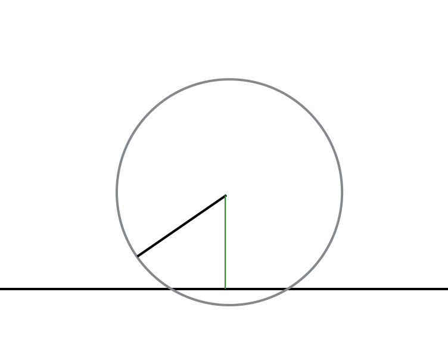
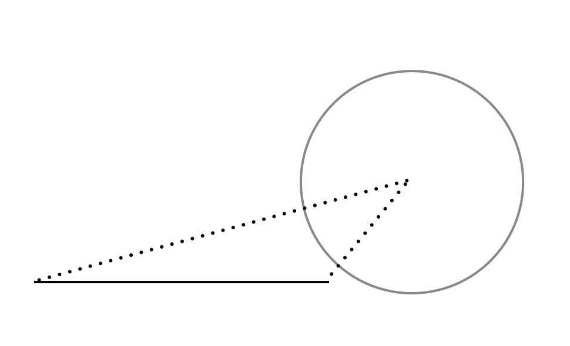
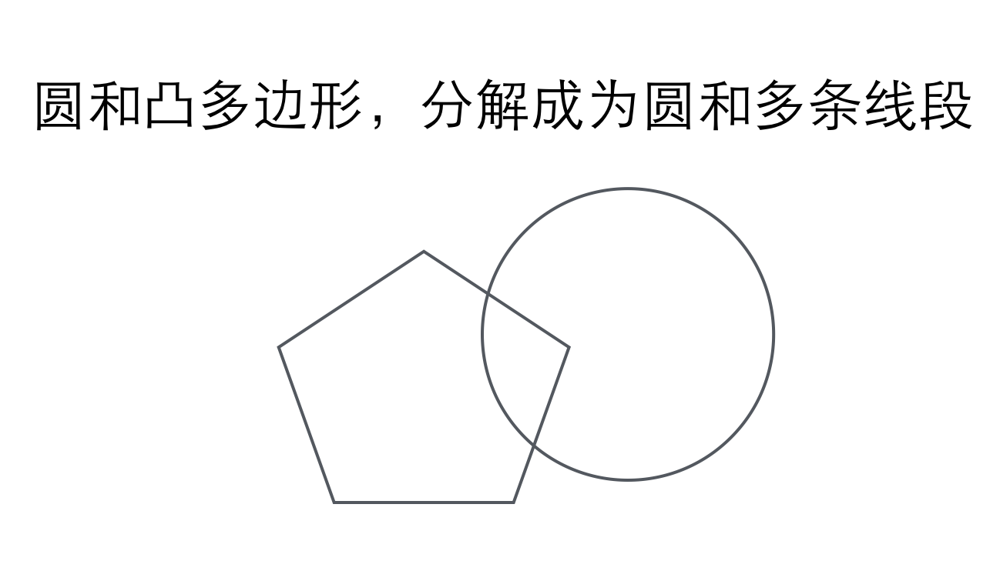
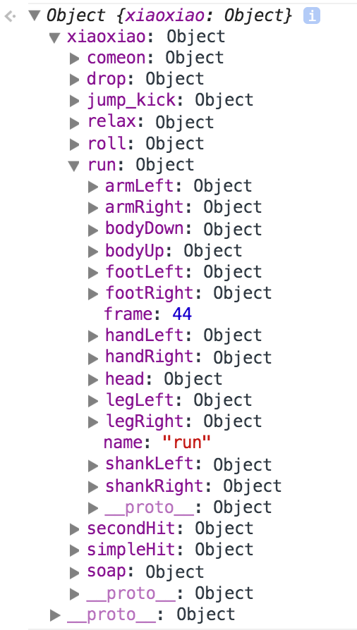

木偶匠人
岑安 @ 2014
算法之于动画 - 提线之于木偶
- 重力与缓动
- 关于碰撞
- 关于帧动画
- 关于骨骼动画
- 三维的简单模拟
重力
缓动
- 加速度 a=(v-v0)/t
- 瞬时速度公式 v=v0+at;
- 位移公式 x=vt+1/2at^2;
- 平均速度 v平=x/t=(v0+v)/2
- 注:自由落体运动是初速度为零的匀加速直线运动，遵循匀变速直线运动规律
- 还有什么值得推荐的方便又简洁的缓动算法？
- 物体在本次单位时间内需要运动的距离永远等于当前位置到目的位置距离的的固定比例。
- 有趣的三角函数
- 如果你是一个“懒人”，看看 easings.net
碰撞
最常用的：
- 相对运动的圆和直线（或线段）的碰撞关系
- 相对运动的圆和凸多边形的碰撞关系
- 相对运动的凸多边形和凸多边形的碰撞关系
圆和直线
圆和线段
圆和凸多边形
多边形和多边形

分离轴定理[SAT]：首先取多边形a的一边，得出该边的法线（即分离轴）。计算出两个多边形在该法线上的投影，如果两个投影没有重叠则说明两个多边形不相交。遍历多边形a所有的边，如果所有法线都不满足条件，则说明两多边形相交。
Tip 1
方向包围盒OBB本质也就是SAT
AABB是不带方向的包围盒的交叠检测 [通常仅限于粗略过滤性碰撞检测]
Tip 2
以上说的检测方法都是基于单帧的“状态检测”，在运动中，所有基于单帧的碰撞检测都是不严谨的。
Tip 3
以上所说的所有事情，都只限于“检测”，“碰撞模拟”和“物理引擎”则是另一个层面的事情，不要混淆
何谓“帧动画”
- 优势：实现简单，快捷
- 劣势：完全依赖资源，加载和维护成本巨大
何谓“骨骼动画”
准备XXX分钟
本质 1：
变相的空间换时间，所有的动画数据已经生成好。

本质 2：
相比根据数据无脑的渲染出结果，
更重要，更困难的是：
怎么生成这些动作的数据？
- 优势：依赖资源少，却可以做出极其复杂的动画
- 劣势：动画数据生成成本高
No WebGL - 三维模拟
原理
- 远小近大，视觉尽头是一个点
- z 方向的变化投影到2d上 x, y 方向的变化
投影公式